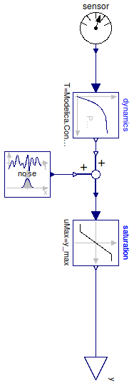
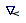

Table of Contents
- User's Guide
- BCs
- Sensors
- Assemblies
- Regions
- Subregions
- Connectors
- Characteristics
- Units
- Quantities
- BaseClasses
Download
- Latest: FCSys-2.0.zip (**Please check back soon or contact kdavies4 at gmail.com.)

| Name | Description |
|---|---|
| PartialSensorNonideal | Partial sensor with dynamics, saturation, and noise |
| PartialSensor | Partial model for a sensor |

| Type | Name | Default | Description |
|---|---|---|---|
| PartialSensor | sensor | redeclare FCSys.Sensors.Base... | Sensor |
| Real | y_min | -y_max | Lower limit of measurement (ymin) |
| Real | y_max | Modelica.Constants.inf | Upper limit of measurement (ymax) |
| Real | k_noise | 0 | Amplitude of noise signal (knoise) |
| FirstOrder | dynamics | redeclare Modelica.Blocks.Co... | Dynamics |
| RandomNormal | noise | redeclare FCSys.Blocks.Conti... | Noise |
| Type | Name | Description |
|---|---|---|
| output RealOutput | y | Measurement |
partial model PartialSensorNonideal "Partial sensor with dynamics, saturation, and noise" extends PartialSensor;replaceable FCSys.Sensors.BaseClasses.PartialSensor sensor constrainedby FCSys.Sensors.BaseClasses.PartialSensor "Sensor"; parameter Real y_min=-y_max "Lower limit of measurement (ymin)"; parameter Real y_max=Modelica.Constants.inf "Upper limit of measurement (ymax)"; parameter Real k_noise=0 "Amplitude of noise signal (knoise)";replaceable Modelica.Blocks.Continuous.FirstOrder dynamics(each initType= Modelica.Blocks.Types.Init.SteadyState, each T=Modelica.Constants.eps) constrainedby Modelica.Blocks.Interfaces.SISO "Dynamics"; Modelica.Blocks.Nonlinear.Limiter saturation(uMax=y_max, uMin=y_min) "Saturation"; FCSys.Blocks.Math.AddSkipInclIncl add "Addition"; replaceable FCSys.Blocks.Continuous.Sources.RandomNormal noise "Noise"; equationconnect(dynamics.y, add.u_1[1]); connect(add.y[1], saturation.u); connect(noise.y, add.u_2); connect(dynamics.u, sensor.y); connect(y, saturation.y); end PartialSensorNonideal;

| Type | Name | Description |
|---|---|---|
| output RealOutput | y | Measurement |
partial model PartialSensor "Partial model for a sensor" extends FCSys.BaseClasses.Icons.Sensor;FCSys.Connectors.RealOutput y "Measurement"; end PartialSensor;